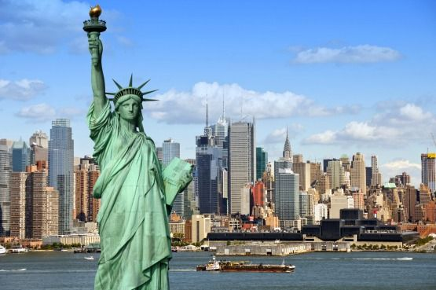

Nueva York
Nueva York (en inglés, New York, oficialmente New York City o NYC en siglas) es la ciudad más poblada de los Estados Unidos y una de las más pobladas del mundo. Desde finales del siglo XIX es uno de los centros de la economía mundial. Nueva York está considerada como una ciudad global, por sus influencias a nivel mundial en los medios de comunicación, en la política, en la educación, en la arquitectura, en el entretenimiento, las artes y la moda. La influencia artística y cultural de la ciudad es de las más fuertes del mundo. En esta ciudad se encuentra la sede central de la Organización de las Naciones Unidas. La gran relevancia de la ciudad a muchos niveles la convierte, junto a Moscú, Pekín, Londres, Tokio y París en una de las ciudades más globalizadas del planeta.
La ciudad se compone de cinco boroughs: Bronx, Brooklyn, Manhattan, Queens y Staten Island (también conocidos como "distritos metropolitanos" para los efectos de la ciudad, y cuya traducción y figura administrativa es equivalente a "municipio"), cada uno de los cuales coincide con un condado: Bronx, Kings, Nueva York, Queens, y Richmond. Con más de 24 millones de neoyorquinos en un área urbana de 830 kilómetros cuadrados (320 mi²), Nueva York es la segunda ciudad con más densidad de población de los Estados Unidos, solo detrás de Union City, Nueva Jersey, localizada al otro lado del río Hudson. Junto con Ginebra, Basilea y Estrasburgo, Nueva York es una de las pocas ciudades del mundo que es sede de varias instituciones internacionales sin ser la capital política de un estado.
La ciudad tiene muchos lugares y edificios reconocidos por todo el mundo. Por ejemplo, la estatua de la Libertad, ubicada en la isla homónima, y la isla de Ellis, que recibió a millones de inmigrantes que llegaban a Estados Unidos a finales del siglo XIX y comienzos del XX. Wall Street ha sido uno de los principales centros mundiales de finanzas desde la Segunda Guerra Mundial y es la sede de la Bolsa de Nueva York. La ciudad también ha concentrado a muchos de los edificios más altos del mundo, entre los que se encuentran el edificio Empire State, el One World Trade Center, el edificio Chrysler, el 432 Park Avenue, la Trump Tower, el edificio Seagram y anteriormente las torres gemelas del World Trade Center, que fueron derribadas en los atentados del 11 de septiembre de 2001. La ciudad también es la cuna de muchos movimientos culturales estadounidenses, como por ejemplo el renacimiento de Harlem en literatura y artes visuales, el expresionismo abstracto (también conocido como Escuela de Nueva York) en pintura, y hip hop, break dance, punk y Tin Pan Alley en música. En 2005, se hablaban más de 700 idiomas y dialectos en la ciudad, y el 30 % de su población había nacido fuera de los Estados Unidos.